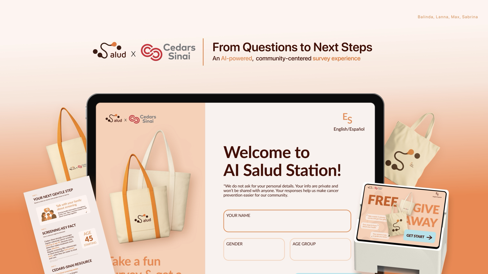

Salud
An AI-powered, community-centered cancer screening experience designed with and for underserved Latino communities in Los Angeles.

From questions to next steps
Salud is an AI-powered, community-centered survey experience developed in partnership with Cedars-Sinai. Deployed at Ralphs grocery stores in Antelope Valley, it helps Latinx adults aged 45–80 discover cancer screening information in a familiar, trusted setting.
Why the system fails at the point of delivery
The problem isn't just that people don't know about screening — it's that every system designed to tell them was built for someone else. Language barriers, distrust of medical institutions, logistical friction, and materials written above a 10th-grade reading level compound into a system that feels inaccessible.
Service ecosystem map — barriers across the full screening journey
Community navigators — promotoras — are the most trusted link in the chain. But even they reported that current materials were too difficult to deliver: too much jargon, too abstract, too clinical for a conversation happening in a grocery store aisle.
Cancer screening reaches Latino communities last
Latino adults in the US are significantly less likely to receive timely cancer screenings — not because of indifference, but because the system was not designed with them in mind. In Antelope Valley, this gap is acute and measurable.
Latinx immigrants are screened at lower rates across every cancer type. For colorectal cancer specifically, late-stage diagnoses among Latinx adults aged 20–29 have risen from 28% to 41% in under two decades — often because standard screening begins too late and materials are impossible to act on.
Antelope Valley, Southern California
Human guidance with digital tools
Reassurance rather than diagnosis
"Existing cancer education materials are often too complex for real-world use — navigators reported that medical jargon and abstract concepts made materials hard to deliver in the field."
— Primary research finding, community navigator interviewsWhat we heard, what we learned
Through secondary research, navigator interviews, and community shadowing, four patterns emerged that shaped our design direction.
Patients felt underprepared and overwhelmed in clinical settings, leading to missed follow-throughs.
Community health workers (promotoras) are the most trusted channel for health information in the community.
Administrative burden — forms, portals, letters — is a significant drop-off point for non-English speakers.
Low awareness of screening eligibility and urgency, particularly for asymptomatic conditions like cervical cancer.
Mapping the full service experience
We mapped the journey from the moment someone hears about screening to when they leave with a summary ticket — finding where trust breaks down and where a design intervention could meet them.
User journey map — 6 stages from awareness to action
Ralphs — a familiar, trusted community space
- Shop for weekly groceries for themselves and their families
- Look for fresh foods and culturally familiar ingredients
- Shop during regular routines — after work, on weekends
- In-store food discounts, giveaways, samples, or demos
- Simple, bilingual health information
- Conversations with promotoras or community health workers
An AI station that guides, not diagnoses
AI Salud Station is a tablet kiosk deployed at Ralphs, introduced by a promotora. Users take a 10-question survey and receive a personalized printed summary — their next gentle step, a key screening fact, and a local Cedars-Sinai resource. No personal data is stored. No diagnosis is made.
Experience walkthrough — prototype demo
Privacy was a core design constraint, not an afterthought. Every decision about what the system collects, says, and outputs was made with the assumption that trust had to be earned in real time.
What we learned by designing in community
The project was presented to Cedars-Sinai's Community Health team in April 2025. The service blueprint and promotora dashboard were received as immediately actionable within their existing outreach infrastructure.
The most important lesson: effective health design requires meeting people in their existing networks of trust, not building new ones. The promotora is not a workaround — she is the system.
Community Health
+ Promotora Tool
in discussion